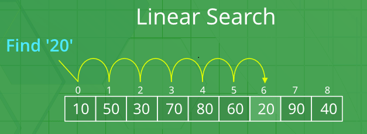
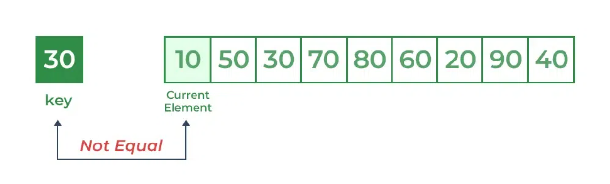
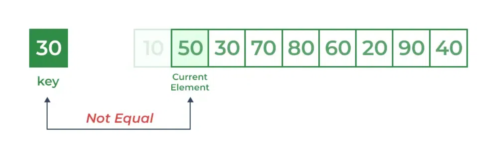
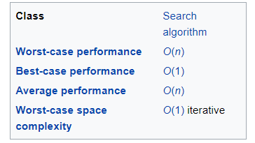

"Quiz Time:Test Your Brainpower!"
Quiz SimulationLINEAR SEARCH
LINEAR SEARCH
What is Linear Search ?
Linear Search is defined as a sequential search algorithm that starts at one end and goes through each element of a list until the desired element is found, otherwise the search continues till the end of the data set.

How Does Linear Search Algorithm Work?
In Linear Search Algorithm,
● Every element is considered as a potential match for the key and checked for the same.
● If any element is found equal to the key, the search is successful and the index of that element is returned.
● If no element is found equal to the key, the search yields “No match found”.
For example: Consider the array arr[] = {10, 50, 30, 70, 80, 20, 90, 40} and key = 30
Step 1: Start from the first element (index 0) and compare key with each element (arr[i]).
● Comparing key with first element arr[0]. SInce not equal, the iterator moves to the next element as a potential match.
● Comparing key with next element arr[1]. SInce not equal, the iterator moves to the next element as a potential match.

Step 2: Now when comparing arr[2] with key, the value matches. So the Linear Search Algorithm will yield a successful message and return the index of the element when key is found (here 2).

Time Complexity

Best Case:
The best-case scenario occurs when the target element is found at the beginning of the array or list.
In this case, the algorithm would only need to perform one comparison to find the target element.
Therefore, the time complexity in the best case is constant, represented as O(1).
Worst Case: The worst-case scenario occurs when the target element is either at the end of the array or not present in the array at all. In this case, the algorithm would need to iterate through all 'n' elements in the array to determine that the target element is not present. Thus, the time complexity in the worst case is linear, represented as O(n).
Average Case: The average case assumes that the target element could be located anywhere within the array with uniform probability. On average, the linear search algorithm would need to examine approximately half of the elements in the array before finding the target element or concluding that it's not present. Therefore, the average time complexity is also linear, represented as O(n).
Advantages of Linear Search
●Easy to Understand: Linear search is really simple to learn and use, even if you're new to programming.
● No Need to Sort: You don't have to organize your data in any special way before using linear search. It works fine with data just as it is.
● Good for Small Lists: If you're dealing with a small number of things to search through, linear search can be faster and easier than more complicated methods.
● Works with Jumbled Lists: It doesn't matter if your list is all mixed up; linear search will still find what you're looking for.
● Doesn't Use Much Memory: Linear search doesn't need any extra memory to do its job. It just looks through your list as it is.
● Finds Duplicates Easily: If there are any duplicates in your list, linear search will spot them as it goes along.
●Great for Changing Lists: If your list keeps changing, that's okay! Linear search can handle it without any problems.
Disadvantage of Linear Search
● Slow with Big Data: Linear search can be slow when dealing with large amounts of data.
● Inefficient for Sorted Data: Doesn't take advantage of sorted lists, making it slower compared to methods like binary search.
● Not as Fast as Binary Search: It's generally slower than binary search, especially for large datasets.
●Limited for Big Changes: Doesn't work well with very large or frequently changing data.
● No Early Stop: Keeps searching even after finding the target, potentially wasting time.
●Not for Complex Searches: Less effective for searches involving multiple conditions or criteria.